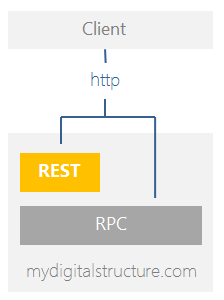
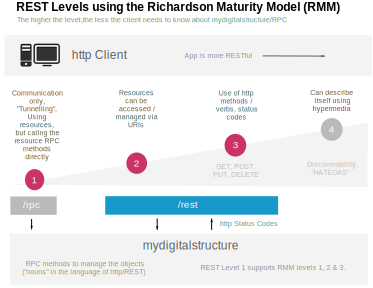

GETTING STARTED
|
|
mydigitalstructure & REST Taking a step back, mydigitalstructure can be used in both a RPC and REST architecture. A lot of the mydigitalstructure documention and examples are based on RPC principles. REST sits above this and using hypermedia and some payload standards creates the "story" of the represented information via hyperlinks/links. mydigitalstructure has an single entry point that allows it to be consumed into a RESTful enviroment. The REST client (eg web-browser, iPhone...) sends a request over HTTP/HTTPS to either:
Based on the Richardson Maturity Model, mydigitalstructure.com is a Level 3 service. We currently have a project underway to increase the maturity level of the mydigitalstructure REST interface. You can use a hybrid rpc-rest methodology - eg getting not logged on response as a 401 http status. To do this, either:
URLs: /image - get an image using attachmentlink /download - download a file using attachmentlink /rest - entity (object) resource URIs |
 |
More information:
- REST
wikipedia
- HATEOAS
Hypermedia as the Engine of Application State
- REST Tutorial / Best Practice
a must read! - REST in Practice
a great read
- Restful Webservices
also a great read
- Explanation of Richardson Maturity Model by Martin Fowler
thank you Martin
- HTTP Methods
verbs: GET, POST, DELETE...
- HTTP Response Status Codes
200, 201...
- HAL - Hypermedia Application Language
a lean hypermedia type, application/hal+...
- CRUD
Create, read, update & delete... - CURIE
Compact URI
MYDIGITALSTRUCTURE IMPLEMENTATION
| METHODS/VERBS | |
| GET | To retrieve an entity (search) |
| POST | To create an entity (add) |
| PUT | To update an entity |
| DELETE | To delete an entity (remove) |
| HEAD | To get an entities meta data |
| HEADERS | |
| Accept | Return format set as MIME Type |
| STATUS CODES | |
| 200 OK | Default |
| 201 Created | When a new entity is created (added) via a POST. |
| 202 Accepted | When an existing entity is updated via a PUT. |
| 304 Not Modified | If exception (ER) generated on existing entity via a PUT. |
| 401 Not Authorised | No rights. |
| 404 Not Found | Resource the URI is referring to does not exist. |
| 406 Not Acceptable | When mandatory data is missing or an in-model rule as been violated. |

Every time you retrieve an instance of a resource and request the "modifieddate" attribute, there will be a http header "Last Modified" included in the response - this header contains the last modified time of the resource at rest on the mydigitalstructure service.
If at a later time you want to check if the local instance you have is the latest, you include "If-Modified-Since" with the time returned in the original "Last-Modified" http header.
If the resource at rest on mydigitalstructure has not been modified since the time sent a status of 304 will be returned with no body contents.
Example If-Modified-Since using 1blankspace advancedsearch object
var oSearch = new AdvancedSearch();
oSearch.method = 'CONTACT_PERSON_SEARCH';
oSearch.addField('firstname,surname,modifieddate');
oSearch.addFilter('id', 'EQUAL_TO', '1');
oSearch.headers = {"If-Modified-Since": "Fri, 15 Aug 2014 10:22:41 GMT"}
oSearch.send(function(data) {});
Example If-Modified-Since GET on webpage to check currency, using jQuery
$.ajax({
type: 'get',
url: 'http://test.mydomain.com/mypage',
headers: {"If-Modified-Since": "Fri, 15 Aug 2014 10:22:41 GMT"}
})
Example getting ETag using 1blankspace advancedsearch object
var oSearch = new AdvancedSearch();
oSearch.method = 'CONTACT_PERSON_SEARCH';
oSearch.addField('firstname,surname,etag');
oSearch.addFilter('id', 'EQUAL_TO', '1000393212');
oSearch.send(function(data) {});
Example If-Note-Match using 1blankspace advancedsearch object
var oSearch = new AdvancedSearch();
oSearch.method = 'CONTACT_PERSON_SEARCH';
oSearch.addField('firstname,surname,etag');
oSearch.addFilter('id', 'EQUAL_TO', '1000393212');
oSearch.headers = {"If-None-Match": "01584DF73016591167ED7D66FCFCBE2C"}
oSearch.send(function(data) {});